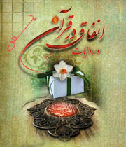

ﺧﺪاوﻧﺪ ﻣﺘﻌﺎل در ﻗﺮآن ﻛﺮﻳﻢ ﺑﻪ وﻳﮋه در ﺳﻮره مبارکه یاسین مومنان را به انفاق آنچه را که در اﺧﺘﻴﺎرﺷﺎن دارﻧﺪ ﺗﻮﺻﻴﻪ و اﻣﺮ ﻓﺮﻣﻮده اﺳﺖ.
روﺷﻦ اﺳﺖ ﻋﻤﻞ ﺑﻪ دﺳﺘﻮر اﻟﻬﻰ و اﻧﻔﺎق در راه ﺧﺪا آﺛﺎر ﺗﺮﺑﻴﺘﻰ و اﺟﺘﻤﺎﻋﻰ ﻓﺮاواﻧﻰ را در ﺑﺮدارد.ﻛﻪ ﻣﻰﺗﻮان ﺑﻪ رﺷﺪ اﻧﺴﺎن و ﺗﻌﺎﻟﻰ او در ﻧـﺰد ﺧﺪا و ﻣﺮدم اﺷﺎرهاى داﺷﺖ و ﻫﻢ ﭼﻨﻴﻦ رﻓﻊ ﻧﻴﺎز اﻗﺘﺼﺎدى ﻧﻴﺎزﻣﻨﺪان و ﻣﺤﺮوﻣﺎن در ﺟﺎﻣﻌﻪ اﺳﻼﻣﻰ را از آﺛﺎر آن ﺑﻪ ﺣﺴﺎب آورد.
آیه ۴۷ سوره مبارکه یاسین ویژگی ها و نتایج انفاق و پیامهای این دستور الهی را مورد توجه قرار داده.
ﻗﺮآن ﻛﺮﻳﻢ اﻧﻔﺎق را از ﺷﺮاﻳﻂ اﻳﻤﺎن و ﺗﻘﻮا ﻣﻰداﻧﺪ.ﺧﺪاوﻧﺪ در آﻳﺎت ﺑﺴﻴـﺎرى ﻣﻮﻣﻨﺎن ر ا ﺑﻪ اﻧﻔﺎق از آﻧﭽﻪ ﻛﻪ دارﻧﺪ اﻣﺮ ﻛﺮده اﺳﺖ.اﻧﻔـﺎق در راه ﺧﺪا آﺛﺎر ﺗﺮﺑﻴﺘﻰ و اﺟﺘﻤﺎﻋﻰ دارد از ﻳﻚ ﺳﻮ ﻳﻜﻰ از ﻣﻬﻤﺘﺮﻳﻦ ﺻﻔﺎت اﻟﻬﻰ؛ﻳﻌﻨﻰ:ﺑﺨﺸﻨﺪﮔﻰ و ﻣﻬﺮﺑﺎﻧﻰ ﺑﻪ دﻳﮕﺮان را در اﻧﺴﺎن ﺗﻘﻮﻳﺖ ﻣﻰﻛﻨﺪ و ﻣﻮﺟﺐ ﺗﻌﺎﻟﻰ او ﻣﻰﺷـﻮد و از ﺳﻮى دﻳﮕﺮ راﻫﻰ اﺳﺖ ﺑﺮاى رﻓﻊ ﻧﻴﺎزﻫﺎى اﻗﺘﺼﺎدى ﻧﻴﺎزﻣﻨﺪان و ﻣﺤﺮوﻣﺎن ﻛﻪ ﻣﻮﺟﺐ ﻋﺪاﻟﺖ اﺟﺘﻤﺎﻋﻰ و اﻗﺘﺼﺎدى ﻣﻰﮔﺮدد.
در آیه ۴۷ سوره یاسین
<<وَإِذَا قِیلَ لَهُمْ أَنفِقُوا مِمَّا رَزَقَكُمْ اللَّهُ قَالَ الَّذِینَ كَفَرُوا لِلَّذِینَ آمَنُوا أَنُطْعِمُ مَن لَّوْ یَشَاءُ اللَّهُ أَطْعَمَهُ إِنْ أَنتُمْ إِلَّا فِی ضَلَالٍ مُّبِینٍ >>
«و ﻫﻨﮕﺎﻣﻰ ﻛﻪ ﺑﻪ آﻧﺎن ﮔﻔﺘﻪ ﺷﻮد: از آﻧﭽﻪ ﺧﺪا ﺑﻪ ﺷﻤﺎ روزى ﻛﺮده اﻧﻔﺎق ﻛﻨﻴﺪ ﻛﺎﻓﺮان ﺑﻪ ﻣـﺆﻣﻨﺎن ﻣﻰﮔﻮﻳﻨﺪ:آﻳﺎ ﻣﺎ ﻛﺴﻰ را اﻃﻌﺎم ﻛﻨﻴﻢ ﻛﻪ اﮔﺮ ﺧﺪا ﻣﻰﺧﻮاﺳﺖ او را اﻃﻌﺎم ﻣﻰکرد؟ ﭘﺲ ﺧﺪا ﺧﻮاﺳﺘﻪ اﺳﺖ او ﮔﺮﺳﻨﻪ ﺑﺎﺷﺪ.ﺷﻤﺎ ﻓﻘﻂ در ﮔﻤﺮاﻫﻰ آﺷﻜﺎرﻳﺪ.»
اﻳﻦ،ﻫﻤﺎن ﻣﻨﻄﻖ ﺑﺴﻴﺎر ﻋـﻮاﻣﺎﻧﻪاى اﺳﺖ ﻛﻪ در ﻫﺮ ﻋﺼﺮ از ﻧﺎﺣﻴـﻪ اﻓـﺮاد ﺧﻮد ﺧﻮاه و ﺑﺨﻴﻞ،ﻣﻄﺮح ﻣﻰﺷﻮد ﻛﻪ ﻣﻰﮔﻮﻳﻨﺪ ﻛﻪ اﮔﺮ ﻓﻼﻧﻰ ﻓﻘﻴﺮ اﺳﺖ،ﻻﺑﺪ ﻛﺎرى ﻛﺮده ﻛﻪ ﺧﺪا ﻣﻰﺧﻮاﻫﺪ ﻓﻘﻴﺮ ﺑﻤﺎﻧﺪ،و اﮔﺮ ﻣﺎ ﻏﻨﻰ ﻫﺴﺘﻴﻢ ﻻﺑﺪ ﻋﻤﻠﻰ اﻧﺠﺎم داده اﻳﻢ ﻛﻪ ﻣﺸﻤـﻮل رﺣﻤﺖ ﺧﺪا ﺷـﺪه اﻳﻢ،ﺑﻨﺎﺑﺮاﻳﻦ؛ﻧﻪ ﻓﻘﺮ آﻧﻬﺎ و ﻧﻪ ﻏﻨﻰ ﺑﻮدن ﻣﺎ ﻫﻴﭻﻛﺪام ﺑﻰﺣﻜﻤﺖ ﻧﻴﺴﺖ!! ﻏﺎﻓﻞ از اﻳﻦ ﻛﻪ:ﺟﻬﺎن ﻣﻴﺰان آزﻣﺎﻳﺶ و اﻣﺘﺤﺎن اﺳﺖ،ﺧﺪاوﻧﺪ ﻳﻜﻰ را ﺑﺎ ﺗﻨﮕﺪﺳﺘﻰ آزﻣﺎﻳﺶ ﻣﻰﻛﻨﺪ،و دﻳﮕﺮى را ﺑﺎ ﻏﻨﺎ و ﺛﺮوت،و ﮔﺎه ﻳﻚ اﻧﺴﺎن را در دو زﻣﺎن،ﺑﺎ اﻳﻦ دو در ورﺗﻪ اﻣﺘﺤﺎن ﻗﺮار ﻣﻰدﻫﺪ ﻛﻪ آﻳﺎ ﺑﻪ ﻫﻨﮕﺎم ﻓﻘﺮ،اﻣﺎﻧﺖ و ﻣﻨﺎﻋﺖ ﻃﺒﻊ،ﻣﺮاﺗﺐ ﺷﻜﺮ ﮔﺬارى را ﺑﻪ ﺟﺎ ﻣﻰآورد؟ﻳﺎ ﻫﻤﻪ را زﻳﺮ ﭘﺎ ﻣﻰﮔﺬارد؟و ﺑﻪ ﻫﻨﮕﺎم ﻏﺬا از آﻧﭽﻪ در اﺧﺘﻴﺎر دارد در را ه ﺧﺪا اﻧﻔﺎق ﻣﻰﻛﻨﺪ،ﻳﺎ ﻧﻪ؟
تحقیق و پژوهش : مرضیه جعفری
با نگاهی به کتاب تفسیر سوره یس نوشتهی محسـن قرائتـی و کتاب مفاهیم و حقایق سوره یس نوشتهی مهنــاز ایــزدی
طبقه بندی: محتوای سوره یس،
برچسب ها: یس، سوره یس، انفاق، آیه ۴۷ سوره یس درباره انفاق، تفسیر سوره یس توسط محسن قرائتی، حقایق سوره مبارکه یس نوشته مهناز ایزدی، مرضیه جعفری،